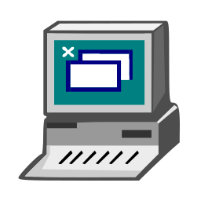

Baixando software
Para podermos colocar em prática o que você aprendeu você começara com portugol, que é um pseudocódigo escrito em português, o que facilita muito o nosso aprendizado, utilizaremos o Visualg, um software que foi criado pelo professor Claudio Morgado de Souza, com o objetivo de resolver o problema que tinha nas salas de aula devido a dificuldade de aprendizado dos alunos.
 Download Visualg
O VisuAlg é um programa que permite criar, editar, interpretar e que também executa os algoritmos em portugol, como se fosse um “programa” normal de computador.